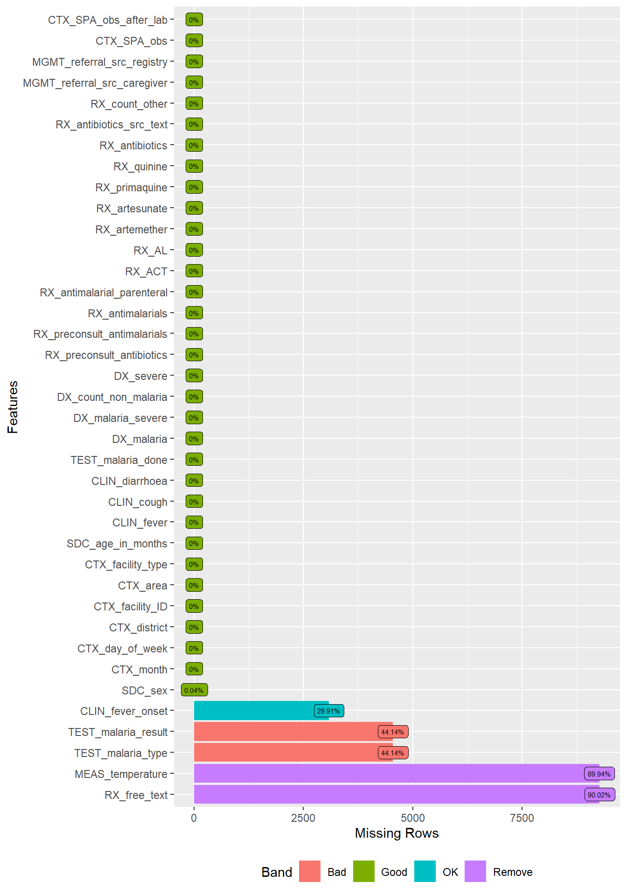
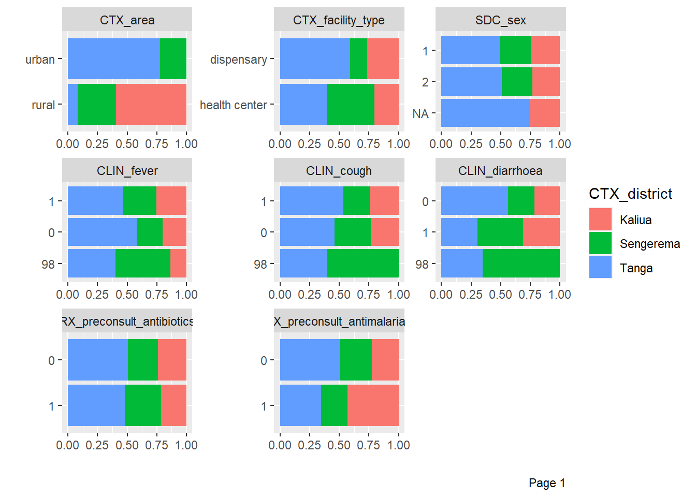
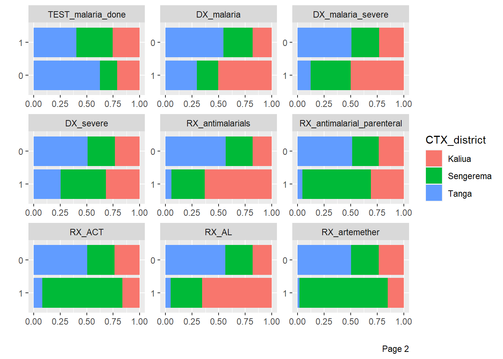
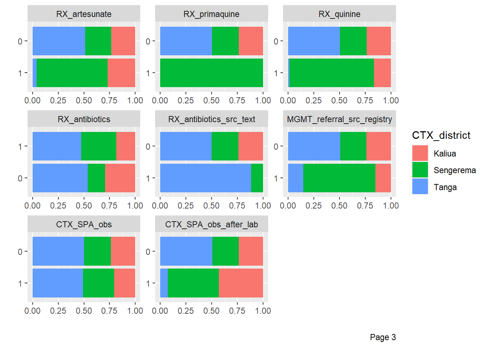
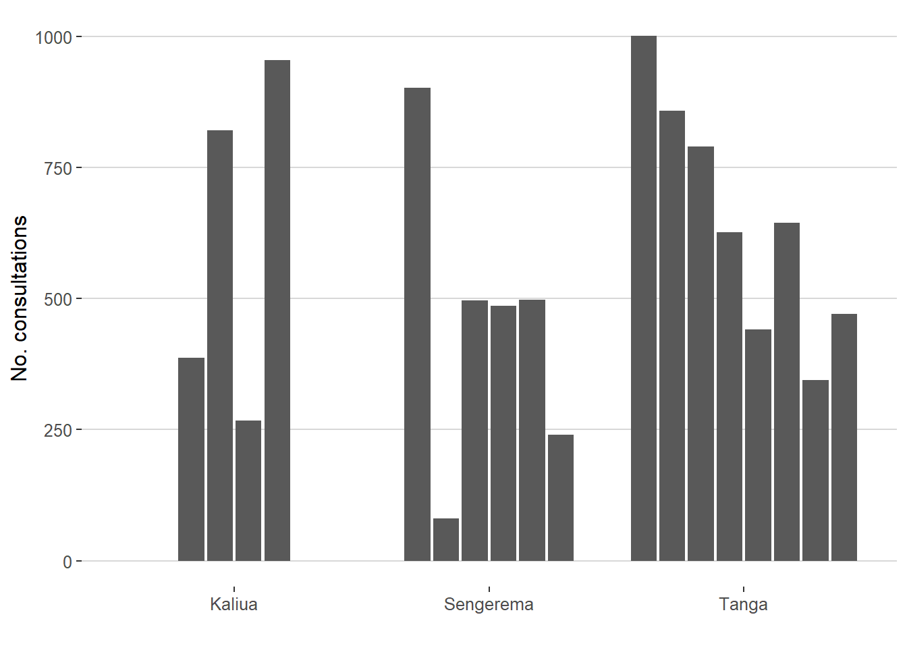

```{r}
library(openxlsx)
library(tidyverse)
library(skimr)
library(DataExplorer)
library(gtsummary)
library(finalfit)
library(ggplot2)
library(ggthemes)
library(networkD3) # For alluvial/Sankey diagrams
```20 :orange_book: Malaria case study - Part 1
20.1 Introduction
20.1.1 Overview
These pages will demonstrate how to use Quarto to data from Tanzania.
20.1.2 Learning objectives
- Apply what you have learnt on Day 1 on real data
20.2 Getting started
20.2.1 Access the Quarto template
Download the Quarto template used for this case study (add link) using GitHub.
Please review previous sections on Quarto, data import and manipulation.
20.2.2 Install packages
```{r}
install.packages("ggplot2")
install.packages("ggthemes")
install.packages("networkD3")
install.packages("apyramid")
```20.2.3 Import the data
Import the dataset and store it into a dataframe called df. Display the first 5 rows and columns child_ID, CTX_month, CTX_district, SDC_age_in_months
Tip
Refer to Section 14.2
```{r}
# Write your code here
``````{r}
stata_df <- haven::read_dta("./data/dataset2.dta")
``````{r}
#| df-print: kable
stata_df %>%
head(5) %>%
dplyr::select(child_ID,
CTX_month,
CTX_district,
SDC_age_in_months) %>%
knitr::kable()
```| child_ID | CTX_month | CTX_district | SDC_age_in_months |
|---|---|---|---|
| 1 | 0 | 1 | 10 |
| 2 | 0 | 1 | 6 |
| 3 | 0 | 1 | 6 |
| 4 | 0 | 1 | 11 |
| 5 | 1 | 1 | 21 |
```{r}
df <- openxlsx::read.xlsx("./data/dataset2.xlsx")
``````{r}
#| df-print: kable
df %>%
head(5) %>%
dplyr::select(child_ID,
CTX_month,
CTX_district,
SDC_age_in_months) %>%
knitr::kable()
```| child_ID | CTX_month | CTX_district | SDC_age_in_months |
|---|---|---|---|
| 1 | 7 | Kaliua | 10 |
| 2 | 7 | Kaliua | 6 |
| 3 | 7 | Kaliua | 6 |
| 4 | 7 | Kaliua | 11 |
| 5 | 8 | Kaliua | 21 |
20.3 Population characteristics
20.3.1 Codebook
| Variable | Coding |
|---|---|
| SDC_age_in_months | |
| SDC_sex | 1: male 2: female 98: unknown |
| CLIN_fever | 0: no 1: yes 98: not sure |
| CLIN_fever_onset | |
| CLIN_cough | 0: no 1: yes 98: not sure |
| CLIN_diarrhoea | 0: no 1: yes 98: not sure |
| RX_preconsult_antibiotics | |
| RX_preconsult_antimalarials | |
| CTX_district | Kaliua Sengerema Tanga |
| CTX_area | Urban rural |
| CTX_facility_type | Dispensary Health centre |
20.3.2 Structure of the data
Examine the structure of the data, including variable names, labels.
```{r}
# Write your code here
``````{r}
RStata::stata("codebook SDC_age_in_months SDC_sex CLIN_fever CLIN_fever_onset CLIN_diarrhoea CLIN_cough RX_preconsult_antibiotics RX_preconsult_antimalarials CTX_district CTX_area CTX_facility_type",
data.in = stata_df)
```. codebook SDC_age_in_months SDC_sex CLIN_fever CLIN_fever_onset CLIN_diarrhoea
> CLIN_cough RX_preconsult_antibiotics RX_preconsult_antimalarials CTX_distric
> t CTX_area CTX_facility_type
-------------------------------------------------------------------------------
SDC_age_in_months SDC_age_in_months
-------------------------------------------------------------------------------
Type: Numeric (double)
Range: [0,59] Units: 1
Unique values: 60 Missing .: 0/10,308
Mean: 18.7498
Std. dev.: 14.8998
Percentiles: 10% 25% 50% 75% 90%
3 7 15 27 43
-------------------------------------------------------------------------------
SDC_sex SDC_sex
-------------------------------------------------------------------------------
Type: Numeric (double)
Range: [0,1] Units: 1
Unique values: 2 Missing .: 4/10,308
Tabulation: Freq. Value
5,229 0
5,075 1
4 .
-------------------------------------------------------------------------------
CLIN_fever CLIN_fever
-------------------------------------------------------------------------------
Type: Numeric (double)
Range: [0,2] Units: 1
Unique values: 3 Missing .: 0/10,308
Tabulation: Freq. Value
3,068 0
7,225 1
15 2
-------------------------------------------------------------------------------
CLIN_fever_onset CLIN_fever_onset
-------------------------------------------------------------------------------
Type: Numeric (double)
Range: [0,14] Units: 1
Unique values: 15 Missing .: 3,083/10,308
Mean: 2.50145
Std. dev.: 1.93099
Percentiles: 10% 25% 50% 75% 90%
1 1 2 3 4
-------------------------------------------------------------------------------
CLIN_diarrhoea CLIN_diarrhoea
-------------------------------------------------------------------------------
Type: Numeric (double)
Range: [0,2] Units: 1
Unique values: 3 Missing .: 0/10,308
Tabulation: Freq. Value
7,982 0
2,306 1
20 2
-------------------------------------------------------------------------------
CLIN_cough CLIN_cough
-------------------------------------------------------------------------------
Type: Numeric (double)
Range: [0,2] Units: 1
Unique values: 3 Missing .: 0/10,308
Tabulation: Freq. Value
4,658 0
5,635 1
15 2
-------------------------------------------------------------------------------
RX_preconsult_antibiotics RX_preconsult_antibiotics
-------------------------------------------------------------------------------
Type: Numeric (double)
Range: [0,1] Units: 1
Unique values: 2 Missing .: 0/10,308
Tabulation: Freq. Value
8,573 0
1,735 1
-------------------------------------------------------------------------------
RX_preconsult_antimalarials RX_preconsult_antimalarials
-------------------------------------------------------------------------------
Type: Numeric (double)
Range: [0,1] Units: 1
Unique values: 2 Missing .: 0/10,308
Tabulation: Freq. Value
9,866 0
442 1
-------------------------------------------------------------------------------
CTX_district CTX_district
-------------------------------------------------------------------------------
Type: Numeric (double)
Range: [1,3] Units: 1
Unique values: 3 Missing .: 0/10,308
Tabulation: Freq. Value
2,429 1
2,703 2
5,176 3
-------------------------------------------------------------------------------
CTX_area CTX_area
-------------------------------------------------------------------------------
Type: Numeric (double)
Range: [1,2] Units: 1
Unique values: 2 Missing .: 0/10,308
Tabulation: Freq. Value
4,088 1
6,220 2
-------------------------------------------------------------------------------
CTX_facility_type CTX_facility_type
-------------------------------------------------------------------------------
Type: Numeric (double)
Range: [1,2] Units: 1
Unique values: 2 Missing .: 0/10,308
Tabulation: Freq. Value
5,599 1
4,709 2```{r}
df %>%
skim(SDC_age_in_months,
SDC_sex,
CLIN_fever,
CLIN_fever_onset,
CLIN_diarrhoea,
CLIN_cough,
RX_preconsult_antibiotics,
RX_preconsult_antimalarials,
CTX_district,
CTX_area,
CTX_facility_type)
```| Name | Piped data |
| Number of rows | 10308 |
| Number of columns | 39 |
| _______________________ | |
| Column type frequency: | |
| character | 3 |
| numeric | 8 |
| ________________________ | |
| Group variables | None |
Variable type: character
| skim_variable | n_missing | complete_rate | min | max | empty | n_unique | whitespace |
|---|---|---|---|---|---|---|---|
| CTX_district | 0 | 1 | 5 | 9 | 0 | 3 | 0 |
| CTX_area | 0 | 1 | 5 | 5 | 0 | 2 | 0 |
| CTX_facility_type | 0 | 1 | 10 | 13 | 0 | 2 | 0 |
Variable type: numeric
| skim_variable | n_missing | complete_rate | mean | sd | p0 | p25 | p50 | p75 | p100 | hist |
|---|---|---|---|---|---|---|---|---|---|---|
| SDC_age_in_months | 0 | 1.0 | 18.75 | 14.90 | 0 | 7 | 15 | 27 | 59 | ▇▆▃▂▁ |
| SDC_sex | 4 | 1.0 | 1.49 | 0.50 | 1 | 1 | 1 | 2 | 2 | ▇▁▁▁▇ |
| CLIN_fever | 0 | 1.0 | 0.84 | 3.74 | 0 | 0 | 1 | 1 | 98 | ▇▁▁▁▁ |
| CLIN_fever_onset | 3083 | 0.7 | 2.50 | 1.93 | 0 | 1 | 2 | 3 | 14 | ▇▅▁▁▁ |
| CLIN_diarrhoea | 0 | 1.0 | 0.41 | 4.32 | 0 | 0 | 0 | 0 | 98 | ▇▁▁▁▁ |
| CLIN_cough | 0 | 1.0 | 0.69 | 3.75 | 0 | 0 | 1 | 1 | 98 | ▇▁▁▁▁ |
| RX_preconsult_antibiotics | 0 | 1.0 | 0.17 | 0.37 | 0 | 0 | 0 | 0 | 1 | ▇▁▁▁▂ |
| RX_preconsult_antimalarials | 0 | 1.0 | 0.04 | 0.20 | 0 | 0 | 0 | 0 | 1 | ▇▁▁▁▁ |
```{r}
df <- df %>%
tibble::remove_rownames() %>%
tibble::column_to_rownames(var="child_ID") %>%
dplyr::mutate(across(c(SDC_sex,
CLIN_fever,
CLIN_cough,
CLIN_diarrhoea,
RX_preconsult_antibiotics,
RX_preconsult_antimalarials,
CTX_district,
CTX_area,
CTX_facility_type),
factor))
```20.3.2.1 Identify missing values
Identify missing values in each variable
DataExplorer::plot_missing(df,
geom_label_args = list(size = 2, label.padding = unit(0.2, "lines")))
DataExplorer::plot_bar(df %>%
dplyr::select(-CTX_facility_ID),
by = "CTX_district")


Add the following two new variables to data frame df
| Variable | Coding |
|---|---|
| SDC_age_category | <2 months 2-11 months 12-23 months 24-35 months 36-47 months 48-59 months |
| CLIN_fever_onset_category | <2 days 2-3 days 4-6 days ≥7 days |
```{r}
# Write your code here
``````{r}
df <- df %>%
dplyr::mutate(
SDC_age_category = dplyr::case_when(
SDC_age_in_months < 2 ~ "<2 months",
SDC_age_in_months >= 2 & SDC_age_in_months < 12 ~ "02-11 months",
SDC_age_in_months >= 12 & SDC_age_in_months < 24 ~ "12-23 months",
SDC_age_in_months >= 24 & SDC_age_in_months < 36 ~ "24-35 months",
SDC_age_in_months >= 36 & SDC_age_in_months < 48 ~ "36-47 months",
SDC_age_in_months >= 48 & SDC_age_in_months < 60 ~ "48-59 months",
TRUE ~ ""
)
) %>%
dplyr::mutate(
CLIN_fever_onset_category = dplyr::case_when(
CLIN_fever_onset < 2 ~ "<2 days",
CLIN_fever_onset >= 2 & CLIN_fever_onset < 4 ~ "2-3 days",
CLIN_fever_onset >= 4 & CLIN_fever_onset < 7 ~ "4-6 days",
CLIN_fever_onset >= 7 ~ ">= 7 days",
TRUE ~ ""
)
)
```Display descriptive statistics for the following population characteristics:
Tip
- Stata
- R: use the tbl_summary function from the
gtsummarypackage
```{r}
# Write your code here
``````{r}
RStata::stata('tabulate SDC_age_category
tabulate SDC_sex
tabulate CLIN_fever
tabulate CLIN_fever_onset_category
tabulate CLIN_diarrhoea
tabulate CLIN_cough
tabulate RX_preconsult_antibiotics
tabulate RX_preconsult_antimalarials
tabulate CTX_district
tabulate CTX_area
tabulate CTX_facility_type',
data.in = stata_df)
```. tabulate SDC_age_category
variable SDC_age_category not found
r(111);
. tabulate SDC_sex
. tabulate CLIN_fever
. tabulate CLIN_fever_onset_category
. tabulate CLIN_diarrhoea
. tabulate CLIN_cough
. tabulate RX_preconsult_antibiotics
. tabulate RX_preconsult_antimalarials
. tabulate CTX_district
. tabulate CTX_area
. tabulate CTX_facility_type```{r}
df %>%
dplyr::select(SDC_age_category,
SDC_sex,
CLIN_fever,
CLIN_fever_onset_category,
CLIN_diarrhoea,
CLIN_cough,
RX_preconsult_antibiotics,
RX_preconsult_antimalarials,
CTX_district,
CTX_area,
CTX_facility_type) %>%
gtsummary::tbl_summary(missing_text = "(Missing)")
```| Characteristic | N = 10,3081 |
|---|---|
| SDC_age_category | |
| <2 months | 597 (5.8%) |
| 02-11 months | 3,576 (35%) |
| 12-23 months | 2,947 (29%) |
| 24-35 months | 1,529 (15%) |
| 36-47 months | 980 (9.5%) |
| 48-59 months | 679 (6.6%) |
| SDC_sex | |
| 1 | 5,229 (51%) |
| 2 | 5,075 (49%) |
| (Missing) | 4 |
| CLIN_fever | |
| 0 | 3,068 (30%) |
| 1 | 7,225 (70%) |
| 98 | 15 (0.1%) |
| CLIN_fever_onset_category | |
| 3,083 (30%) | |
| <2 days | 1,998 (19%) |
| >= 7 days | 343 (3.3%) |
| 2-3 days | 4,386 (43%) |
| 4-6 days | 498 (4.8%) |
| CLIN_diarrhoea | |
| 0 | 7,982 (77%) |
| 1 | 2,306 (22%) |
| 98 | 20 (0.2%) |
| CLIN_cough | |
| 0 | 4,658 (45%) |
| 1 | 5,635 (55%) |
| 98 | 15 (0.1%) |
| RX_preconsult_antibiotics | |
| 0 | 8,573 (83%) |
| 1 | 1,735 (17%) |
| RX_preconsult_antimalarials | |
| 0 | 9,866 (96%) |
| 1 | 442 (4.3%) |
| CTX_district | |
| Kaliua | 2,429 (24%) |
| Sengerema | 2,703 (26%) |
| Tanga | 5,176 (50%) |
| CTX_area | |
| rural | 4,088 (40%) |
| urban | 6,220 (60%) |
| CTX_facility_type | |
| dispensary | 5,599 (54%) |
| health center | 4,709 (46%) |
| 1 n (%) | |
20.4 Healthcare provider actions
20.4.1 Codebook
- Temperature measured
- Fever measured
- Fever (temp or history)
- Malaria test
- Any severe diagnosis
- Malaria diagnosis
- Malaria treatment
- Referral
| Variable | Coding |
|---|---|
| MEAS_temperature | |
| TEST_malaria_result | 0: negative 1: positive 2: indeterminate 95: unreadable result 98: not sure |
| DX_malaria | 0: no 1: yes |
| RX_antimalarials | 0: no 1: yes |
| MGMT_referral_src_caregiver | |
| MGMT_referral_src_registry |
20.4.2 Structure of the data
Examine the structure of the data, including variable names, labels.
```{r}
# Write your code here
```RStata::stata("codebook MEAS_temperature TEST_malaria_result TEST_malaria_result DX_malaria RX_antimalarials MGMT_referral_src_caregiver MGMT_referral_src_registry",
data.in = stata_df). codebook MEAS_temperature TEST_malaria_result TEST_malaria_result DX_malaria
> RX_antimalarials MGMT_referral_src_caregiver MGMT_referral_src_registry
-------------------------------------------------------------------------------
MEAS_temperature MEAS_temperature
-------------------------------------------------------------------------------
Type: Numeric (double)
Range: [34.5,42.5] Units: .1
Unique values: 16 Missing .: 9,271/10,308
Mean: 37.0781
Std. dev.: .977139
Percentiles: 10% 25% 50% 75% 90%
36 36.5 37 37.5 38.5
-------------------------------------------------------------------------------
TEST_malaria_result TEST_malaria_result
-------------------------------------------------------------------------------
Type: Numeric (double)
Range: [0,98] Units: 1
Unique values: 5 Missing .: 4,550/10,308
Tabulation: Freq. Value
4,665 0
1,032 1
1 2
3 95
57 98
4,550 .
-------------------------------------------------------------------------------
TEST_malaria_result TEST_malaria_result
-------------------------------------------------------------------------------
Type: Numeric (double)
Range: [0,98] Units: 1
Unique values: 5 Missing .: 4,550/10,308
Tabulation: Freq. Value
4,665 0
1,032 1
1 2
3 95
57 98
4,550 .
-------------------------------------------------------------------------------
DX_malaria DX_malaria
-------------------------------------------------------------------------------
Type: Numeric (double)
Range: [0,1] Units: 1
Unique values: 2 Missing .: 0/10,308
Tabulation: Freq. Value
8,508 0
1,800 1
-------------------------------------------------------------------------------
RX_antimalarials RX_antimalarials
-------------------------------------------------------------------------------
Type: Numeric (double)
Range: [0,1] Units: 1
Unique values: 2 Missing .: 0/10,308
Tabulation: Freq. Value
9,018 0
1,290 1
-------------------------------------------------------------------------------
MGMT_referral_src_caregiver MGMT_referral_src_caregiver
-------------------------------------------------------------------------------
Type: Numeric (double)
Range: [0,98] Units: 1
Unique values: 4 Missing .: 0/10,308
Tabulation: Freq. Value
10,122 0
164 1
9 97
13 98
-------------------------------------------------------------------------------
MGMT_referral_src_registry MGMT_referral_src_registry
-------------------------------------------------------------------------------
Type: Numeric (double)
Range: [0,1] Units: 1
Unique values: 2 Missing .: 0/10,308
Tabulation: Freq. Value
10,194 0
114 1df %>%
skimr::skim(MEAS_temperature,
TEST_malaria_result,
TEST_malaria_result,
DX_malaria,
RX_antimalarials,
MGMT_referral_src_caregiver,
MGMT_referral_src_registry)| Name | Piped data |
| Number of rows | 10308 |
| Number of columns | 40 |
| _______________________ | |
| Column type frequency: | |
| numeric | 6 |
| ________________________ | |
| Group variables | None |
Variable type: numeric
| skim_variable | n_missing | complete_rate | mean | sd | p0 | p25 | p50 | p75 | p100 | hist |
|---|---|---|---|---|---|---|---|---|---|---|
| MEAS_temperature | 9271 | 0.10 | 37.08 | 0.98 | 34.5 | 36.5 | 37 | 37.5 | 42.5 | ▃▇▃▁▁ |
| TEST_malaria_result | 4550 | 0.56 | 1.20 | 9.93 | 0.0 | 0.0 | 0 | 0.0 | 98.0 | ▇▁▁▁▁ |
| DX_malaria | 0 | 1.00 | 0.17 | 0.38 | 0.0 | 0.0 | 0 | 0.0 | 1.0 | ▇▁▁▁▂ |
| RX_antimalarials | 0 | 1.00 | 0.13 | 0.33 | 0.0 | 0.0 | 0 | 0.0 | 1.0 | ▇▁▁▁▁ |
| MGMT_referral_src_caregiver | 0 | 1.00 | 0.22 | 4.50 | 0.0 | 0.0 | 0 | 0.0 | 98.0 | ▇▁▁▁▁ |
| MGMT_referral_src_registry | 0 | 1.00 | 0.01 | 0.10 | 0.0 | 0.0 | 0 | 0.0 | 1.0 | ▇▁▁▁▁ |
Add the following two new variables to data frame df
- MEAS_fever
- Fever (temp or history)
Tip
- Stata: use the gen command
- R: use the mutate function from the
dplyrpackage
```{r}
# Write your code here
``````{r}
df <- df %>%
dplyr::mutate(CALC_temperature_measured = !is.na(MEAS_temperature)) %>%
dplyr::mutate(CALC_fever = MEAS_temperature >= 37.5) %>%
dplyr::mutate(CALC_fever_or_temp = (CLIN_fever == 1) | (CALC_fever == 1))
```Display descriptive statistics for the following healthcare provider actions:
Tip
- R: use the tbl_summary function from the
gtsummarypackage
```{r}
# Write your code here
``````{r}
df %>%
dplyr::select(CALC_temperature_measured,
CALC_fever,
CALC_fever_or_temp,
TEST_malaria_result,
TEST_malaria_result,
DX_malaria,
RX_antimalarials,
MGMT_referral_src_caregiver,
MGMT_referral_src_registry) %>%
gtsummary::tbl_summary(missing_text = "(Missing)")
```| Characteristic | N = 10,3081 |
|---|---|
| CALC_temperature_measured | 1,037 (10%) |
| CALC_fever | 326 (31%) |
| (Missing) | 9,271 |
| CALC_fever_or_temp | 7,252 (97%) |
| (Missing) | 2,842 |
| TEST_malaria_result | |
| 0 | 4,665 (81%) |
| 1 | 1,032 (18%) |
| 2 | 1 (<0.1%) |
| 95 | 3 (<0.1%) |
| 98 | 57 (1.0%) |
| (Missing) | 4,550 |
| DX_malaria | 1,800 (17%) |
| RX_antimalarials | 1,290 (13%) |
| MGMT_referral_src_caregiver | |
| 0 | 10,122 (98%) |
| 1 | 164 (1.6%) |
| 97 | 9 (<0.1%) |
| 98 | 13 (0.1%) |
| MGMT_referral_src_registry | 114 (1.1%) |
| 1 n (%) | |
20.5 Number of consultations by facility
Plot the number of consultations by facility in bars, grouped by district.
Tip
- Stata:
- R:
```{r}
stata_cmd <- '
graph bar (count) child_ID, over(CTX_facility_ID, axis(off)) over(CTX_district, relabel(1 "Kaliua" 2 "Sengerema" 3 "Tanga")) nofill ytitle(No. consultations) title(No. consultations by facility)
graph export ./images/day02_stata_plot.png, replace
'
RStata::stata(stata_cmd,
data.in = stata_df)
```.
. graph bar (count) child_ID, over(CTX_facility_ID, axis(off)) over(CTX_distric
> t, relabel(1 "Kaliua" 2 "Sengerema" 3 "Tanga")) nofill ytitle(No. consultatio
> ns) title(No. consultations by facility)
. graph export ./images/day02_stata_plot.png, replace
file ./images/day02_stata_plot.png saved as PNG format
```{r}
df %>%
dplyr::group_by(CTX_district,
CTX_facility_ID) %>%
count() %>%
ggplot2::ggplot(aes(x = haven::as_factor(CTX_district),
y = n)) +
ggplot2::geom_bar(position = position_dodge2(preserve = "single"),
stat="identity") +
ggplot2::labs(x = "", y = "No. consultations") +
ggthemes::theme_hc()
```
20.6 Fever assessment
- temp measurement by reported fever; by facility
```{r}
# Write here
```chisq.test(df$CLIN_fever, df$TEST_malaria_result)
Pearson's Chi-squared test
data: df$CLIN_fever and df$TEST_malaria_result
X-squared = 61.449, df = 8, p-value = 2.42e-10```{r}
df$CTX_facility_ID <- haven::as_factor(df$CTX_facility_ID)
df %>%
dplyr::filter(CLIN_fever == 1) %>%
dplyr::select(MEAS_temperature,
CTX_facility_ID) %>%
gtsummary::tbl_summary(by = CTX_facility_ID) %>%
add_p()
```| Characteristic | F8529, N = 1861 | F8195, N = 5811 | F8793, N = 7801 | F7729, N = 1971 | F4848, N = 4061 | F8444, N = 2091 | F9109, N = 3581 | F8379, N = 4651 | F5145, N = 4901 | F6552, N = 2911 | F4024, N = 5501 | F3366, N = 6031 | F7327, N = 2701 | F4056, N = 621 | F5560, N = 3561 | F6813, N = 3231 | F0542, N = 6821 | F5656, N = 4161 | p-value2 |
|---|---|---|---|---|---|---|---|---|---|---|---|---|---|---|---|---|---|---|---|
| MEAS_temperature | 37.50 (37.00, 38.00) | NA (NA, NA) | 39.50 (39.25, 39.75) | 37.00 (36.25, 37.50) | 36.50 (36.00, 36.88) | 37.00 (37.00, 37.00) | 38.50 (37.00, 38.50) | 37.50 (36.50, 38.25) | 37.50 (37.00, 38.75) | 37.00 (37.00, 38.00) | 37.00 (37.00, 37.50) | 38.00 (38.00, 38.50) | 38.25 (38.13, 38.38) | 39.00 (38.25, 39.50) | 37.00 (36.50, 38.00) | 37.00 (36.50, 37.50) | 37.50 (36.88, 37.75) | 36.25 (36.00, 37.00) | <0.001 |
| Unknown | 136 | 581 | 778 | 70 | 380 | 203 | 333 | 422 | 479 | 117 | 531 | 598 | 268 | 59 | 222 | 184 | 670 | 398 | |
| 1 Median (IQR) | |||||||||||||||||||
| 2 Kruskal-Wallis rank sum test | |||||||||||||||||||
- also showing ‘prevalence’ of fever when of whole clinic vs of those who measure to indicate bias
```{r}
# Write here
```20.7 Malaria tests
- malaria tests of those with history or measured fever
```{r}
# Write here
``````{r}
table(df$CALC_fever_or_temp, df$TEST_malaria_result)
```
0 1 2 95 98
FALSE 70 2 0 1 1
TRUE 3952 966 1 2 47chisq.test(df$CALC_fever_or_temp, df$TEST_malaria_result)
Pearson's Chi-squared test
data: df$CALC_fever_or_temp and df$TEST_malaria_result
X-squared = 33.92, df = 4, p-value = 7.74e-07```{r}
df$CTX_facility_ID <- haven::as_factor(df$CTX_facility_ID)
df %>%
dplyr::filter(CALC_fever_or_temp == 1) %>%
dplyr::select(TEST_malaria_result,
CTX_facility_ID) %>%
gtsummary::tbl_summary(by = CTX_facility_ID)
```| Characteristic | F8529, N = 1901 | F8195, N = 5811 | F8793, N = 7801 | F7729, N = 1971 | F4848, N = 4061 | F8444, N = 2091 | F9109, N = 3581 | F8379, N = 4671 | F5145, N = 4911 | F6552, N = 3011 | F4024, N = 5501 | F3366, N = 6031 | F7327, N = 2701 | F4056, N = 621 | F5560, N = 3581 | F6813, N = 3301 | F0542, N = 6831 | F5656, N = 4161 |
|---|---|---|---|---|---|---|---|---|---|---|---|---|---|---|---|---|---|---|
| TEST_malaria_result | ||||||||||||||||||
| 0 | 83 (67%) | 151 (33%) | 319 (54%) | 125 (82%) | 285 (75%) | 135 (98%) | 159 (95%) | 371 (93%) | 226 (95%) | 213 (96%) | 221 (97%) | 346 (97%) | 21 (25%) | 32 (57%) | 242 (92%) | 225 (91%) | 511 (90%) | 287 (97%) |
| 1 | 38 (31%) | 300 (66%) | 270 (46%) | 28 (18%) | 95 (25%) | 0 (0%) | 2 (1.2%) | 25 (6.3%) | 7 (2.9%) | 4 (1.8%) | 6 (2.6%) | 6 (1.7%) | 59 (69%) | 20 (36%) | 20 (7.6%) | 21 (8.5%) | 55 (9.7%) | 10 (3.4%) |
| 2 | 0 (0%) | 0 (0%) | 1 (0.2%) | 0 (0%) | 0 (0%) | 0 (0%) | 0 (0%) | 0 (0%) | 0 (0%) | 0 (0%) | 0 (0%) | 0 (0%) | 0 (0%) | 0 (0%) | 0 (0%) | 0 (0%) | 0 (0%) | 0 (0%) |
| 95 | 1 (0.8%) | 0 (0%) | 1 (0.2%) | 0 (0%) | 0 (0%) | 0 (0%) | 0 (0%) | 0 (0%) | 0 (0%) | 0 (0%) | 0 (0%) | 0 (0%) | 0 (0%) | 0 (0%) | 0 (0%) | 0 (0%) | 0 (0%) | 0 (0%) |
| 98 | 2 (1.6%) | 5 (1.1%) | 1 (0.2%) | 0 (0%) | 0 (0%) | 3 (2.2%) | 6 (3.6%) | 2 (0.5%) | 6 (2.5%) | 6 (2.7%) | 0 (0%) | 3 (0.8%) | 5 (5.9%) | 4 (7.1%) | 0 (0%) | 1 (0.4%) | 3 (0.5%) | 0 (0%) |
| Unknown | 66 | 125 | 188 | 44 | 26 | 71 | 191 | 69 | 252 | 78 | 323 | 248 | 185 | 6 | 96 | 83 | 114 | 119 |
| 1 n (%) | ||||||||||||||||||
20.8 Malaria treatments
- malaria diagnoses vs. positive tests vs. treatment.
```{r}
# Write here
``````{r}
df <- df %>%
dplyr::mutate(TEST_malaria_positive = 1* (TEST_malaria_result == 1))
table(df$TEST_malaria_result, df$DX_malaria, df$RX_antimalarials) %>% knitr::kable()
```| Var1 | Var2 | Var3 | Freq |
|---|---|---|---|
| 0 | 0 | 0 | 3890 |
| 1 | 0 | 0 | 15 |
| 2 | 0 | 0 | 1 |
| 95 | 0 | 0 | 2 |
| 98 | 0 | 0 | 31 |
| 0 | 1 | 0 | 645 |
| 1 | 1 | 0 | 49 |
| 2 | 1 | 0 | 0 |
| 95 | 1 | 0 | 1 |
| 98 | 1 | 0 | 17 |
| 0 | 0 | 1 | 99 |
| 1 | 0 | 1 | 50 |
| 2 | 0 | 1 | 0 |
| 95 | 0 | 1 | 0 |
| 98 | 0 | 1 | 2 |
| 0 | 1 | 1 | 31 |
| 1 | 1 | 1 | 918 |
| 2 | 1 | 1 | 0 |
| 95 | 1 | 1 | 0 |
| 98 | 1 | 1 | 7 |
chisq.test(df$TEST_malaria_result, df$DX_malaria)
Pearson's Chi-squared test
data: df$TEST_malaria_result and df$DX_malaria
X-squared = 2582, df = 4, p-value < 2.2e-16chisq.test(df$TEST_malaria_result, df$RX_antimalarials)
Pearson's Chi-squared test
data: df$TEST_malaria_result and df$RX_antimalarials
X-squared = 4508.8, df = 4, p-value < 2.2e-16```{r}
# df$CTX_facility_ID <- haven::as_factor(df$CTX_facility_ID)
# df %>%
# dplyr::filter(TEST_malaria_positive == 1) %>%
# dplyr::select(DX_malaria,
# RX_antimalarials,
# CTX_facility_ID) %>%
# gtsummary::tbl_summary(by = CTX_facility_ID)
```